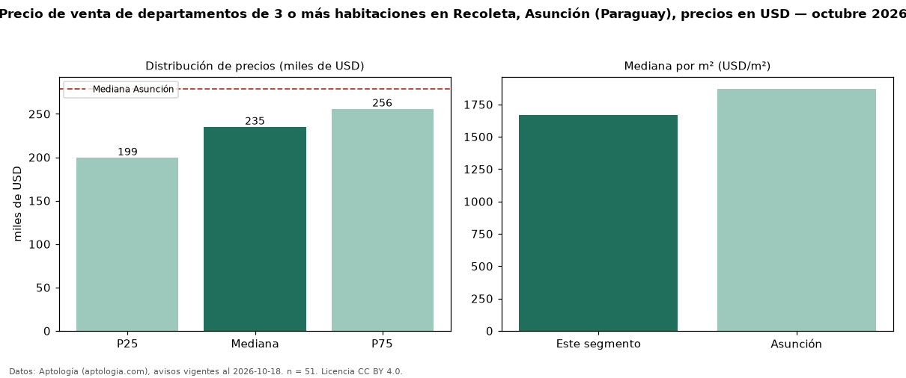

Precio de venta de departamentos de 3 o más habitaciones en Recoleta, Asunción (Paraguay), precios en USD — octubre 2026
Con 51 avisos vigentes, el precio mediano de departamentos de 3 o más habitaciones en venta en Recoleta, Asunción (Paraguay) es USD 234.900. Eso es 16 % por debajo de la mediana de Asunción para departamentos de 3 o más habitaciones (USD 279.000). Por metro cuadrado, la mediana es USD 1.666/m² (n = 46 avisos con área), 11 % por debajo de Asunción (USD 1.871/m²). Son 10 % de los 502 avisos de departamentos en venta de la zona, cuya mediana general es USD 122.736 (+91 %). El área mediana anunciada es 149 m². La mitad central de los avisos va de USD 199.450 a USD 255.712 (razón 1,3), una dispersión baja. Datos: Aptología (aptologia.com), CC BY 4.0 — https://www.aptologia.com/py/venta/asuncion/recoleta. Archivos: PDF, CSV con las cifras y gráfica PNG.

| Avisos únicos | 51 |
|---|---|
| Percentil 25 | COP 199.450 |
| Mediana | COP 234.900 |
| Percentil 75 | COP 255.711 |
| Mediana por m² | COP 1.666 |
Fuente: avisos vigentes de portales inmobiliarios recopilados por Aptología, deduplicados (mínimo 30 avisos únicos por celda). Precios pedidos, no cerrados. Fecha: 2026-10-18.